MBG1032 - Doç.Dr.Alper YILMAZ - 28 Şubat 2024
Bir deneyde, bir olayın gerçekleşme olasılığı istenilen durumların sayısının, tüm olası durumların sayısına oranlanmasıdır.
Formül:
\[ P(A) = \frac{s(A)}{s(E)} \]
P(A): Olasılık Değeri, A olayının gerçekleşme ihtimali.
s(A): İstenen Durumlar, A kümesinin eleman sayısı.
s(E): Tüm Durumlar, Evrensel kümenin (E) eleman sayısı.
Soru: İki zar aynı anda atıldığında toplamın 7 gelmesi olasılığını hesaplarken, evrensel küme ne olmalıdır?
İstenen durumların sayısı kaçtır?
Soru: Bir ailenin iki çocuğu var ve en az biri erkek. Diğerinin de erkek olma olasılığı nedir?
Evrensel küme sayısı ve istenen durumların sayısı kaçtır?
İstenen olay sayısı: EE
Evrensel küme: EE, EK (KK durumu kümemizde yok!)
P(diğer çocuğun erkek olması) = 1 / 2
Soru: Bir hastanede 10.000 kadına meme kanseri tarama testi uygulanıyor. Bu hastalığın görülme sıklığını %1 olarak kabul edelim.
Bu testin doğruluk oranı %90 — yani hasta birini %90 ihtimalle yakalar, sağlıklı birini de %90 ihtimalle doğru şekilde “sağlıklı” olarak tanır. Test sonucunuz pozitif çıktı. Gerçekten hasta olma ihtimaliniz nedir? (Tarama Testi Paradoksu)
Evrensel kümenin çok büyük olduğu veya sayılamadığı durumlarda dağılımlar kullanılabilir
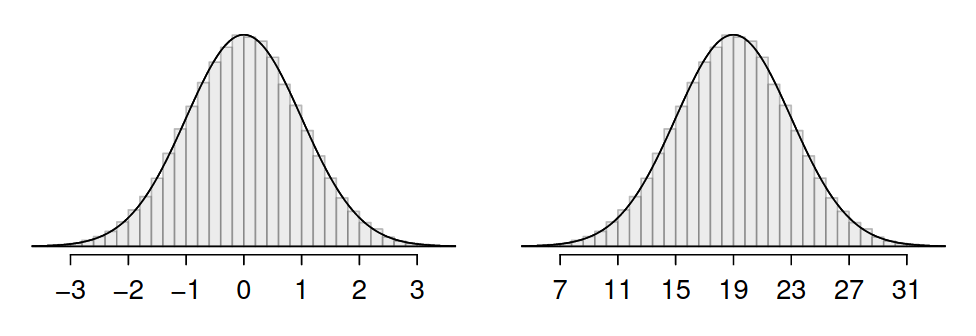
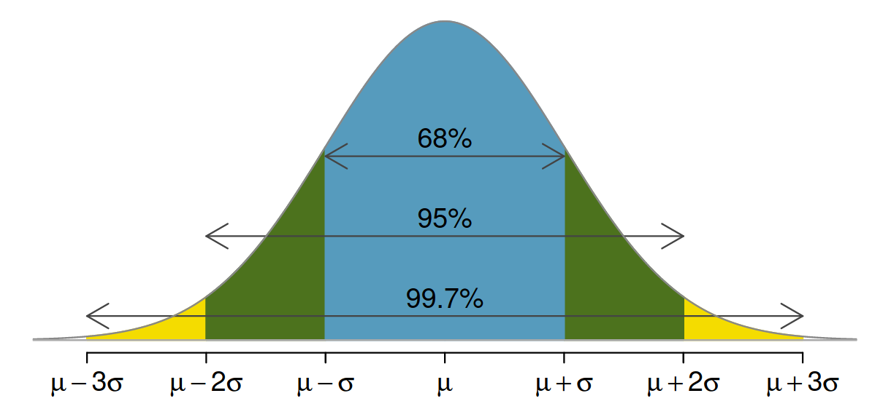
Ortalamaya kaç standard sapma uzak olunduğunu gösterir ve normal dağılım değerlerini standart hale getirir (~ -3,3)
\[ Z = \frac{x-\mu}{\sigma} \]
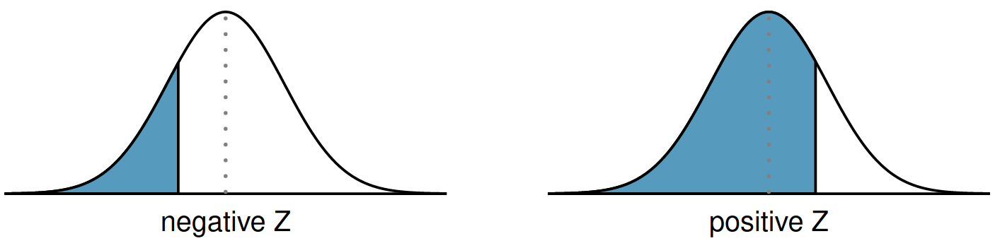
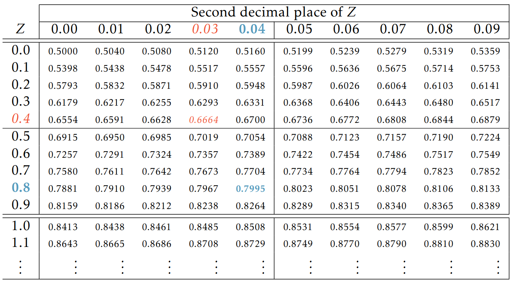
SAT skorları için ortalama 1500, standart sapma 300 iken 1800’den düşük puan alma ihtimali kaçtır? 1800 puan yüzde kaçlık dilime denk gelmektedir?
Z-skor açısından
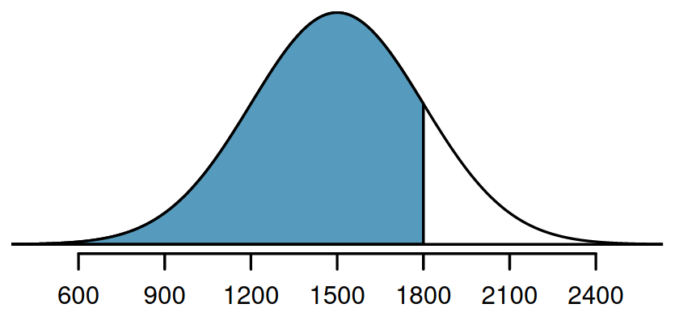
Bir öğrencinin SAT skoru 1630’tan yüksek olma ihtimali nedir?
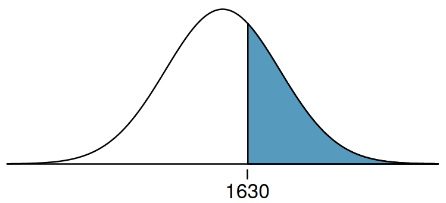
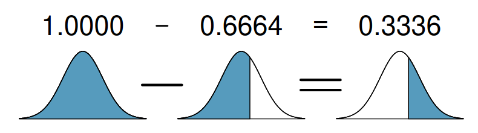
20-62 yaş erkeklerin boy dağılımı ortalaması 70 inç ve standart sapması 3.3 inç iken, rastgele seçilen bir erkeğin boyunun 69 inç ve 74 inç arasında olması ihtimali nedir?
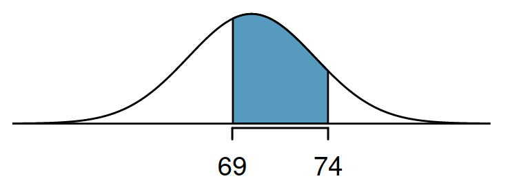
Boyu 40 yüzdelik dilimde olan bir kişinin boyu kaçtır?
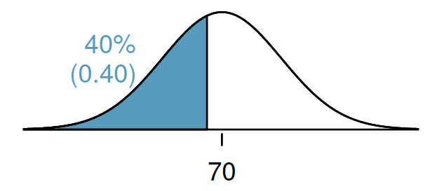
Poisson dağılımı, nadiren meydana gelen olayların, belirli bir zaman aralığında veya belirli bir alanda kaç kere gerçekleşeceğini tahmin etmek için kullanılan bir olasılık dağılımıdır.
Aşağıdaki grafik 8 milyon nüfuslu bir şehirde bir yıl boyunca hastaneye gelen günlük Akut Miyokard İnfarktüsü (AMI) vaka sayısını göstermektedir (ortalama=4.4 kişi)
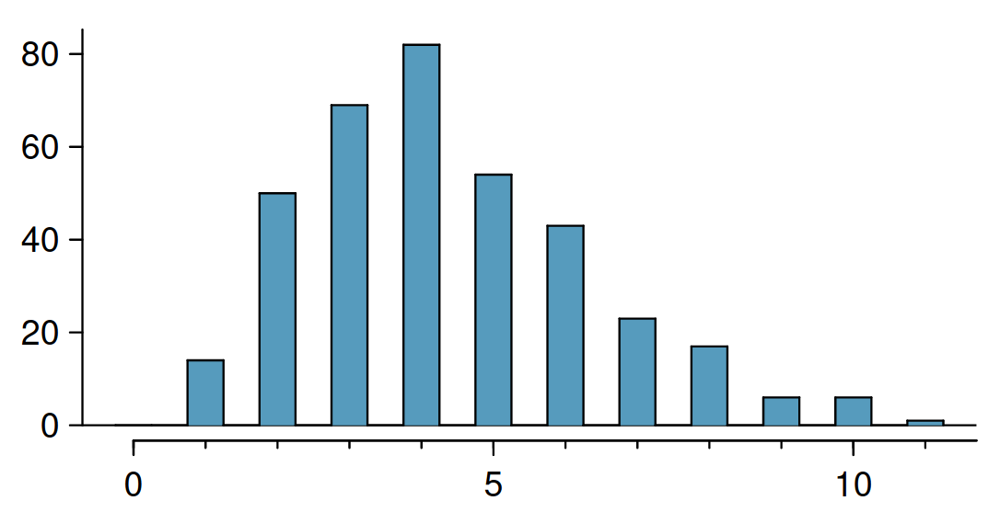
Poisson dağılımı gösteren biyolojik veriler, genellikle nadir ve rastgele meydana gelen olaylara odaklanır. Bu tür veriler, çeşitli biyolojik disiplinler ve uygulama alanları üzerinden örneklerle açıklanabilir:
k olay olma ihtimali
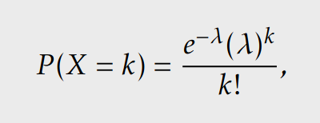
t zaman içinde gerçekleşen k olay ihtimali
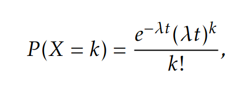
Bernoulli dağılımı, yalnızca iki sonuçtan (başarı veya başarısızlık, evet veya hayır, 1 veya 0 gibi) birini alabilen rastgele bir deneyi modellemek için kullanılan bir olasılık dağılımıdır. Binomial dağılımında n defa gerçekleşen, ikili sonucu olan olayların ihtimali hesaplanırken, Bernoulli dağılımında k=1’dir.
Madeni para atışı, hastalık testi sonucu, bitki tohumu çimlenmesi, ilaç tepkisi gibi örnekler Bernoulli dağılımı için örnek gösterilebilir.
Bernoulli dağılımının tekrarı ile sadece Binomial dağılım ortaya çıkmaz; geometrik, negatif binomial ve hipergeometrik dağılımlar Bernoulli dağılımı temel alır.
Binomial dağılım, bağımsız ve aynı olasılığa sahip n denemede tam olarak k başarı elde etme olasılığını hesaplamak için kullanılan bir olasılık dağılımıdır. Her deneme bir Bernoulli denemesidir (iki sonuç: başarı veya başarısızlık).
Aşağıdaki grafik 10 hastaya uygulanan bir tedavide yan etki görülme sayısının dağılımını göstermektedir (yan etki olasılığı p=0.3)
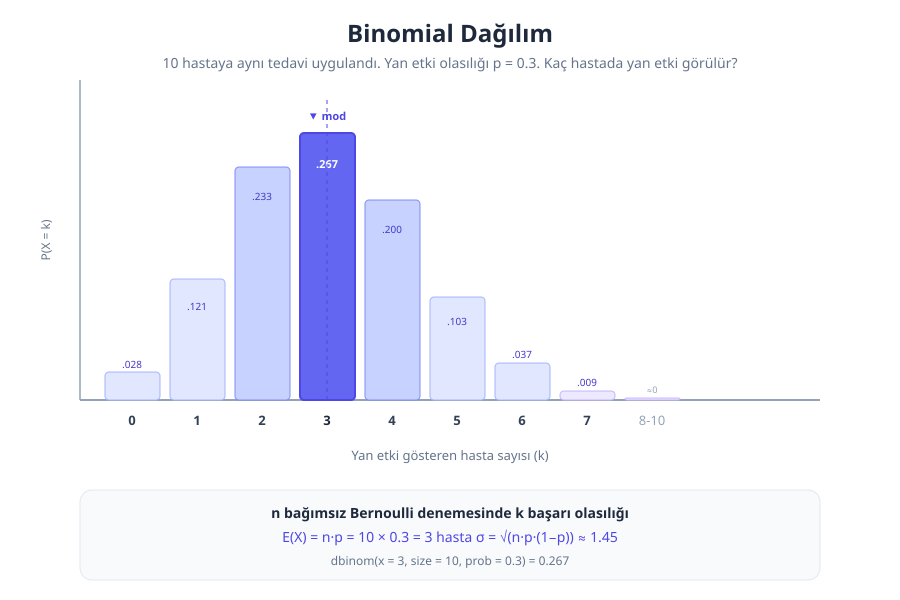
Binomial dağılım, sabit sayıda bağımsız denemede başarı sayısını modellemek için kullanılır. Biyolojik ve biyomedikal araştırmalarda sıkça karşılaşılan örnekler:
n denemede k başarı olma ihtimali
\[ P(X = k) = \binom{n}{k} p^k (1-p)^{n-k} \]
Beklenen değer (ortalama) ve varyans
\[ E(X) = np \qquad \text{Var}(X) = np(1-p) \]
Kombinasyon formülü
\[ \binom{n}{k} = \frac{n!}{k!(n-k)!} \]
Negatif binomial dağılım, bağımsız Bernoulli denemelerinde r. başarıya ulaşmak için gereken toplam deneme sayısını modelleyen bir olasılık dağılımıdır. Geometrik dağılımın genellemesidir: geometrik dağılımda r=1 iken, negatif binomial dağılımda r≥1’dir.
Aşağıdaki grafik bir klinik araştırmada tedaviye yanıt oranı p=0.3 iken, 3. yanıt veren hastayı bulmak için gereken toplam hasta sayısının dağılımını göstermektedir.
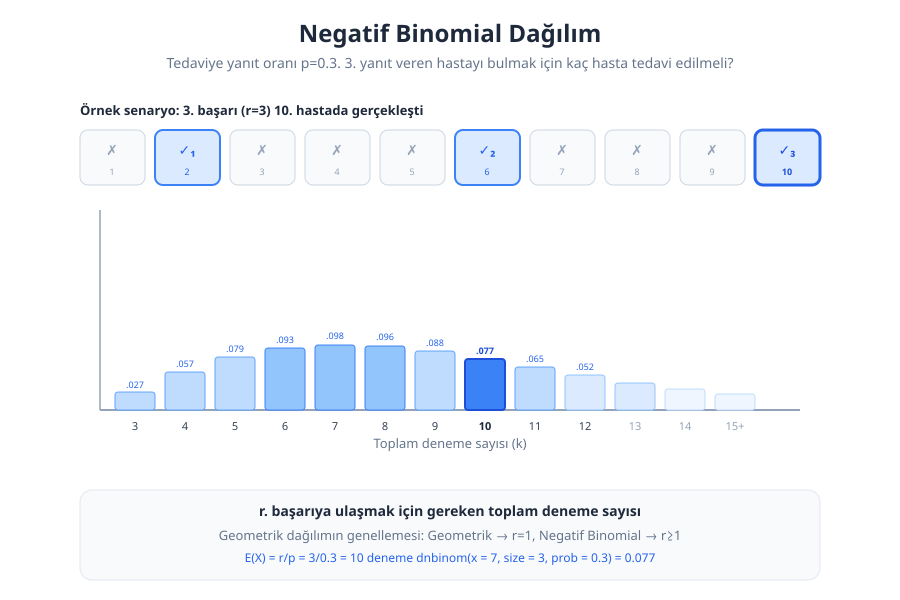
Negatif binomial dağılım, belirli sayıda başarıya ulaşmak için gereken deneme sayısını veya aşırı dağılmış (overdispersed) sayım verilerini modellemek için kullanılır. Biyolojik araştırmalarda sıkça karşılaşılan örnekler:
k. denemede r. başarıyı elde etme ihtimali
\[ P(X = k) = \binom{k-1}{r-1} p^r (1-p)^{k-r} \]
Beklenen değer (ortalama) ve varyans
\[ E(X) = \frac{r}{p} \qquad \text{Var}(X) = \frac{r(1-p)}{p^2} \]
Not: R’da
rnbinomvednbinomfonksiyonları r. başarıdan önceki başarısızlık sayısını (x = k − r) kullanır; toplam deneme sayısını değil.
Geometrik dağılım, bağımsız ve aynı şekilde dağılmış Bernoulli denemeleri serisinde, ilk başarının elde edilmesi için gereken deneme sayısını modelleyen bir olasılık dağılımıdır. Diğer bir deyişle, bir dizi denemede ilk başarıya ulaşana kadar yapılan deneme sayısının dağılımını tanımlar.
Geometrik dağılım, biyolojik süreçler ve fenomenler içinde çeşitli örneklerle temsil edilebilir. Bu tür dağılımlar, belirli bir olayın meydana gelmesi için gereken deneme sayısını veya bir başarı elde edene kadar geçen süreyi modellemek için özellikle uygun olabilir. İşte geometrik dağılımı kullanarak modelleyebileceğiniz biyolojik örnekler:
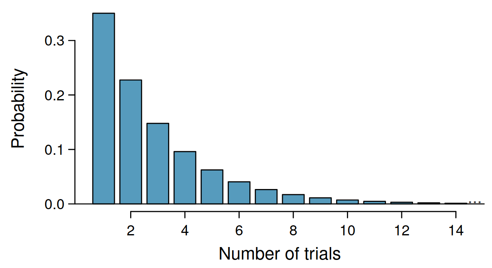
Gerçekleşme ihtimali p= 0.35 iken, ilk denemede başarılı olma ihtimali yine 0.35’tir. İkinci denemede başarılı olma ihtimali ise 0.65 x 0.35 = 0.228i’dir. Üçüncü denemede başarılı olma ihtimali ise 0.65 x 0.65 x 0.35 = 0.148’tir.
Geometric dağılımda olasılık üssel şekilde azalır.
k. denemede ilk başarıyı elde etme ihtimali
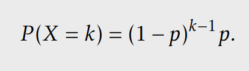
Bekleme süresinin ortalaması, varyansı ve standard sapması
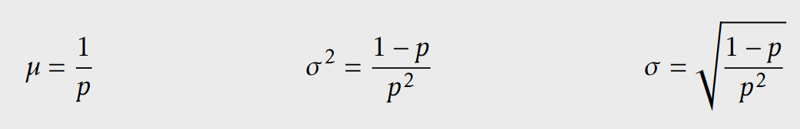
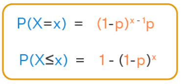
Başarının ilk 4 denemede gerçekleşme ihtimali kaçtır?
P(X=1) + P(X=2) + P(X=3) + P(X=4) = 0.82
Başarının ilk 4 denemede gerçekleşmeme ihtimali kaçtır?
1- 0.82 = 0.18
R’da geometrik fonksiyon “başarıdan öncde gerekli deneme sayısını” dikkate alır
Hipergeometrik dağılım, sonlu bir popülasyondan iadesiz çekiliş yapıldığında, belirli bir özelliğe sahip bireylerin seçilme sayısını modelleyen bir olasılık dağılımıdır. Binomial dağılımdan farkı, her çekişte olasılığın değişmesidir çünkü çekilen birey geri konmaz.
Aşağıdaki grafik bir gen seti zenginleştirme analizini göstermektedir: 20.000 genlik genomdan rastgele 50 gen seçildiğinde, bunların kaç tanesinin kanser ilişkili 800 gen arasından geldiğini sorgulamaktadır.
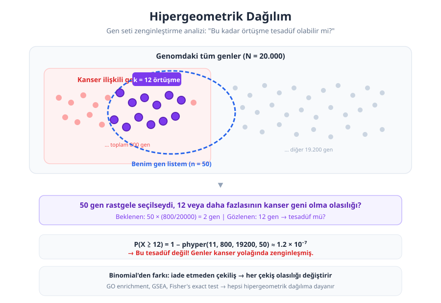
Hipergeometrik dağılım, iadesiz örneklemde belirli bir kategoriden kaç birey seçileceğini modellemek için kullanılır. Biyolojik araştırmalarda yaygın kullanım alanları:
Popülasyondaki N bireyden n tanesini seçtiğimizde, K özel bireyin k tanesini çekme ihtimali
\[ P(X = k) = \frac{\binom{K}{k}\binom{N-K}{n-k}}{\binom{N}{n}} \]
Beklenen değer ve varyans
\[ E(X) = n\frac{K}{N} \qquad \text{Var}(X) = n\frac{K}{N}\frac{N-K}{N}\frac{N-n}{N-1} \]
Parametreler: N = popülasyon büyüklüğü, K = popülasyondaki “başarı” sayısı, n = çekilen örneklem, k = örneklemdeki başarı sayısı
Log-normal dağılım, logaritması normal dağılım gösteren bir sürekli olasılık dağılımıdır. Değerler her zaman pozitiftir ve dağılım sağa çarpıktır. Biyolojide çarpımsal süreçlerle oluşan ölçümler (hücre bölünmesi, gen ekspresyonu, enzim aktivitesi) genellikle log-normal dağılım gösterir.
Aşağıdaki grafik gen ekspresyon seviyelerinin (FPKM) ham halini ve log dönüşümü sonrasını karşılaştırmaktadır.
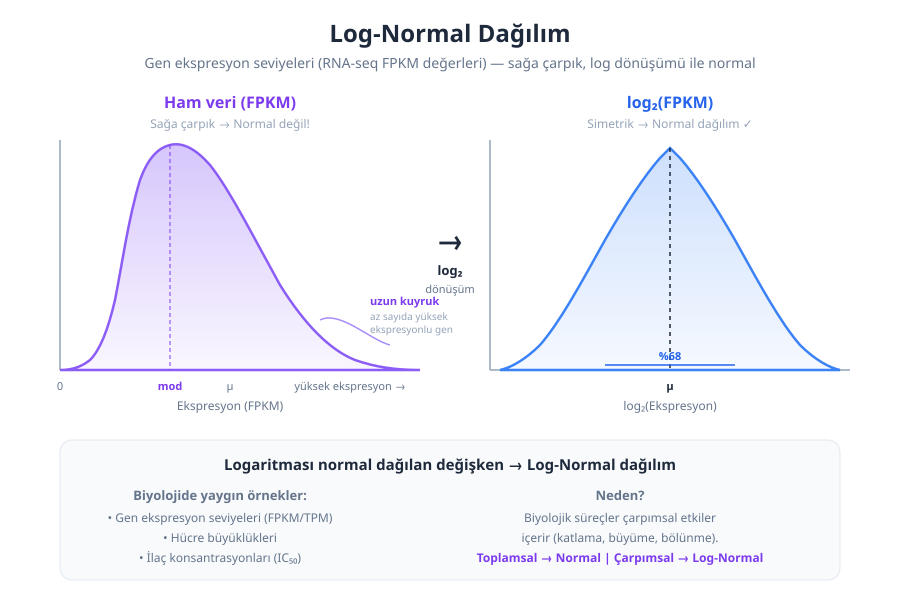
Log-normal dağılım, değerleri sıfırın altına düşmeyen ve sağa çarpık olan biyolojik ölçümlerde yaygın olarak karşımıza çıkar:
\(X\) log-normal dağılıyorsa \(\ln(X)\) normal dağılır: \(\ln(X) \sim N(\mu, \sigma^2)\)
Olasılık yoğunluk fonksiyonu
\[ f(x) = \frac{1}{x \sigma \sqrt{2\pi}} \exp\left(-\frac{(\ln x - \mu)^2}{2\sigma^2}\right), \quad x > 0 \]
Beklenen değer ve varyans
\[ E(X) = e^{\mu + \sigma^2/2} \qquad \text{Var}(X) = e^{2\mu + \sigma^2}(e^{\sigma^2} - 1) \]
Neden log-normal? Normal dağılım toplamsal rastgele etkilerin sonucudur (Merkezi Limit Teoremi). Log-normal dağılım ise çarpımsal rastgele etkilerin sonucudur. Biyolojide büyüme, katlama ve bölünme gibi süreçler çarpımsaldır.